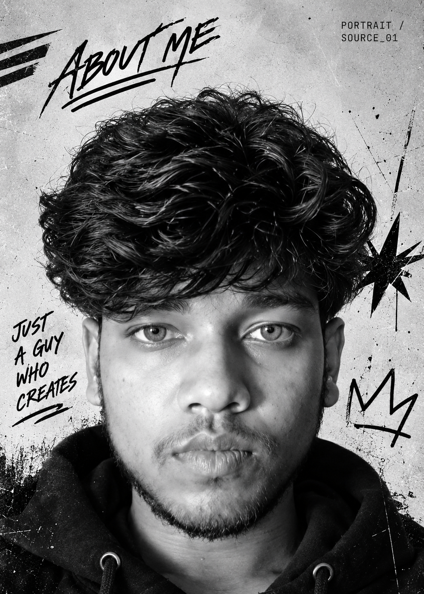

01 / 05LANG
Programming
Java · C++ · C
DSA · Basic Assembly
{ }
FIELD NOTE 01 OPEN TO BUILD
I'm Sagar Mankar — a Full-Stack Architect, Security & Mobile App Developer, and Diploma Engineering student building useful systems under real constraints.
FIELD NOTE 02 PROFILE

HELLO WORLD,
Diploma engineering student in my 3rd year at BKIT Sakoli. I move across frontend, backend, MERN-style builds, tooling, debugging, and security-aware product thinking.
I bring structure under pressure by breaking problems down, choosing tools, building logic, and stabilising demos. The work is practical: understand the constraint, make the flow hold, then keep pushing until it works.
Problem solving and DSA fundamentals as the base layer.
Frontend, backend, APIs, product flows, and tooling.
Cybersecurity basics, awareness flows, and risk-first thinking.
Debugging and delivery basics when the deadline gets loud.
FIELD NOTE 03 TOOLBOX
No fake percentages.
Just the tools I use to move
an idea toward working.
Java · C++ · C
DSA · Basic Assembly
JavaScript · HTML · CSS
React · Node.js · Express · MongoDB
Android / app workflows
App delivery basics
Cybersecurity fundamentals
Awareness flows · Risk-first thinking
GitHub · Firebase basics · Debugging · Deployment basics · Tooling
FIELD NOTE 04 SELECTED WORK
Seven projects.
Different constraints.
Same instinct: make it hold.
FIELD NOTE 05 EVIDENCE
Selected signals from the work — dates, scale, and results that can be checked against the build history.
1st Place
GHRSTU INNOVEX-26
Tech Manthan
Sankalp Bharat 2026
800+ teams
Real users across a food-ordering
product ecosystem
FIELD NOTE 06 HOW I BUILD
Break the problem down. Choose the tool. Build the logic. Stabilise the demo. Debug what matters.
”Turn a noisy problem into smaller moving parts.
Match the stack to the constraint and the flow.
Debug under pressure until the product is demo-ready.
FIELD NOTE 07 NEXT SIGNAL
Open to full-stack, security, and app-building conversations. Drop a message below or find the work on GitHub.
Open GitHub ↗ NO BIG PROMISES / JUST GOOD SYSTEMS